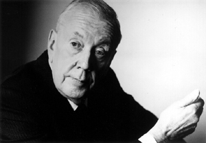

Nineteen Eighty Four
Michael Anderson
Réalisateur du film.
Filmographie:
Cinéma
- Private Angelo (1949)
- Waterfront (1950)
- Hell Is Sold Out (1951)
- Night Was Our Friend (1951)
- Will Any Gentleman… ? (1953)
- The House of the Arrow (1953)
- The Dam Busters (1955)
- Nineteen Eighty Four (1956)
- Around the World in Eighty Days (1956)
- Yangtse Incident: The Story of H.M.S. Amethyst (1957)
- Chase a Crooked Shadow (1958)
- Shake Hands with the Devil (1959)
- The Wreck of the Mary Deare (1959)
- All the Fine Young Cannibals (1960)
- The Nacked Edge (1961)
- Flight from Ashiya (1963)
- Wild and Wonderful (1964)
- Operation Crossbow (1965)
- The Quiller Memorandum (1966)
- The Shoes of the Fisherman (1968)
- Pope Joan (1972)
- Doc Savage : The Man of Bronze (1975)
- Conduct Unbecoming (1975)
- Logan's Run (1976)
- Orca (1977)
- Dominique (1979)
- Murder by Phone (1982)
- Second Time Lucky (1984)
- Separate Vacations (1986)
- La bottega dell'orefice (1989)
- Millenium (1989)
- Summer of the Monkeys (1998)
- The New Adventures of Pinocchio (2000)
- Tenderloin (2008)
Télévision
- The Martian Chronicles (1980)
- Sword of Gideon (1986)
- Young Catherine (1991)
- Scales of Justice (1992)
- The Sea Wolf (1993)
- Rugged Gold (1994)
- Captains Courageous (1996)
- 20,000 Leagues Under the Sea (1997)
En tant qu'acteur
- In Which We Serve (1942)
- Lion Roars Again (1975)
Récompenses
- Nomination Meilleur réalisateur pour Le Tour du monde en quatre-vingts jours (1957)

George Orwell
Auteur du livre à l'origine du film.
Bibliographie:
- La Vache enragée (Down and Out in London and Paris, 1933)
- Une histoire birmane (Burmese Days, 1935)
- Une fille de pasteur (A Clergyman's Daughter, 1935)
- Et vive l'Aspidistra ! (Keep the Aspidistra Flying, 1936)
- Le Quai de Wigan (The Road to Wigan Pier, 1937)
- Hommage à la Catalogne (Homage to Catalonia, 1938)
- Un peu d'air frais (Coming Up for Air, 1939)
- La Ferme des animaux (Animal Farm, 1945)
- 1984 (Nineteen Eighty-Four, 1949)
Malcolm Arnold
Compositeur de la musique du film
Oeuvres:

- Divertimento pour orchestre, op. 1 (1945)
- Symphonie pour cordes, op. 13 (1946)
- Symphonie no 1, op. 22 (1949)
- Études symphoniques « Machines », op. 30 (1951)
- Ouverture « Sussex », op. 31 (1951)
- Symphonie no 2, op. 40 (1953)
- Quatre danses écossaises, op. 59 (1957)
- Symphonie des jouets, op. 62 (1957)
- Symphonie no 3, op. 63 (1957)
- Concerto pour guitare (I. Allegro, II. Lento - Vivace - Lento, III. Con brio) (1959)
- Symphonie no 4, op. 71 (1960)
- Symphonie no 5, op. 74 (1961)
- Quatre danses des Cornouailles, op. 91 (1966)
- Symphonie no 6, op. 95 (1967)
- Ouverture « Anniversaire », op. 99 (1968)
- Divertimento n°2 (1969)
- Symphonie no 7, op. 113 (1973)
- Concerto philharmonique, op. 120 (1976)
- Variations pour orchestre, op. 122 (1977)
- Symphonie no 8, op. 124 (1978)
- Quatre danses irlandaises, op. 126 (1986)
- Symphonie no 9, op. 128 (1986)
- Quatre danses galloises, op. 138 (1988)
- Suite « Manx » (petite suite no 3), op. 142 (1990)
- Suite de concert « le choix d’Hobson » (1992)
Edmond O'brien
Un des acteurs principaux, dans le rôle de Winston Smith
Filmographie:
- Prison Break (1938)
- The Hunchback of Notre Dame (1939)
- A Girl, a Guy, and a Gob (1941)
- Parachute Battalion (1941)
- Obliging Young Lady (1942)
- Powder Town (1942)
- The Amazing Mrs. Holliday (1943)
- Winged Victory de George Cukor (1944)
- The Killers (1946)
- The Web (1947)
- Brute Force (1947)
- A Double Life (1947)
- Another Part of the Forest (1948)
- For the Love of Mary (1948)
- Fighter Squadron (1948)
- An Act of Murder (1948)
- White Heat (1949)
- Backfire (1950)
- D.O.A. (1950)
- 711 Ocean Drive (1950)
- The Admiral Was a Lady (1950)
- Between Midnight and Dawn (1950)
- The Redhead and the Cowboy (1951)
- Two of a Kind (1951)
- Warpath (1951)
- Silver City (1951)
- The Greatest Show on Earth (1952)
- Denver and Rio Grande (1952)
- The Turning Point (1952)
- Man in the Dark (1953)
- Cow Country (1953)
- The Hitch-Hiker (1953)
- Julius Caesar (1953)
- China Venture (1953)
- The Bigamist (1953)
- The Shanghai Story (1954)
- Shield for Murder (1954)
- The Barefoot Contessa (1954)
- Pete Kelly's Blues (1955)
- D-Day the Sixth of June (1956)
- A Cry in the Night (1956)
- 1984 (1956)
- The Rack (1956)
- The Girl Can't Help It (1956)
- The Big Land (1957)
- Stopover Tokyo (1957)
- The World Was His Jury (1958)
- Sing Boy Sing (1958)
- Up Periscope (1959)
- L'Ambitieuse (ou Le Passager clandestin) (1959)
- The Last Voyage (1960)
- The 3rd Voice (1960)
- The Great Impostor (1961)
- Man-Trap (1961)
- Moon Pilot (1962)
- The Man Who Shot Liberty Valance (1962)
- Birdman of Alcatraz (1962)
- The Longest Day (1962)
- Seven Days in May (1964)
- Rio Conchos (1964)
- Sylvia (1965)
- Synanon (1965)
- Fantastic Voyage (1966)
- Peau d'espion (1967)
- Le Vicomte règle ses comptes (1967)
- The Wild Bunch (1969)
- The Love God? (1969)
- Dream No Evil (1970)
- The other side of the wind (1972)
- They Only Kill Their Masters (1972)
- Lucky Luciano de Francesco Rosi (1974)
- 99 and 44/100% Dead (1974)

Jan Sterling
L'actrice principale, dans le rôle de Julia
Filmographie:
- Tycoon (1947)
- Johnny Belinda (1948)
- Caged (1950)
- The Skipper Surprised His Wife (1950)
- Snow Dog (1950)
- Mystery Street (1950)
- Gunfire (1950)
- Union Station (1950)
- The Mating Season (1951)
- Appointment with Danger (1951)
- Ace in the Hole (1951)
- Rhubarb (1951)
- Flesh and Fury (1952)
- Sky Full of Moon (1952)
- Split Second (1953)
- The Vanquished (1953)
- Pony Express (1953)
- Alaska Seas (1954)
- The High and the Mighty (1954)
- Return from the Sea (1954)
- The Human Jungle (1954)
- Women's Prison (1955)
- Female on the Beach (1955)
- Man with the Gun (1955)
- 1984 (1956)
- The Harder They Fall (1956)
- Slaughter on Tenth Avenue (1957)
- The Female Animal (1958)
- High School Confidential! (1958)
- Kathy O' (1958)
- Love in a Goldfish Bowl (1961)
- The Incident (1967)
- The Angry Breed (1968)
- The Minx (1969)
- Sammy Somebody (1976)
- First Monday in October (1981)

Michael Redgrave
Un des acteurs principaux, dans le rôle du général O'Brien
Filmographie:
- The Lady Vanishes (1938)
- Climbing High (1938)
- Stolen Life (1939)
- The Stars Look Down (1940)
- The Big Blockade (1940)
- A Window in London (1940)
- Kipps (1941)
- Jeannie (1941)
- Atlantic Ferry (1941)
- Thunder Rock (1943)
- The Way to the Stars (1945)
- Dead of Night (1945)
- Fame Is the Spur (1946)
- The Captive Heart (1946)
- The Years Between (1946)
- The Man Within (1947)
- Mourning becomes Electra (1947)
- Secret Beyond the Door... (1948)
- The Browning Version (1951)
- The Magic Box (1951)
- The Importance of Being Earnest (1952)
- The Green Scarf (1954)
- The Dam Busters (1954)
- The Sea Shall Not Have Them (1954)
- The Night My Number Came Up (1955)
- Mr. Arkadin (1955)
- Oh... Rosalinda!! (1955)
- 1984 (1956)
- Time Without Pity (1957)
- The Happy Road (1957)
- Behind the Mask (1958)
- The Quiet American (1958)
- Law and Disorder (1958)
- Shake Hands with the Devil (1959)
- The Wreck of the Mary Deare (1959)
- No My Darling Daughter (1961)
- The Innocents (1961)
- Shakespeare: Soul of an Age (1962)
- The Loneliness of the Long Distance Runner (1962)
- Uncle Vanya (1963)
- Young Cassidy (1965)
- The Hill (1965)
- The Heroes of Telemark (1965)
- La Vingt-cinquième heure (1967)
- Assignment K (1968)
- Oh! What a Lovely War (1969)
- Battle of Britain (1969)
- Goodbye, Mr. Chips (1969)
- Connecting rooms (1970)
- Goodbye Gemini (1970)
- The Go-Between (1970)
- Nicholas and Alexandra (1971)
- The Last Target (1972)
- Rime of the Ancient Mariner (1975)